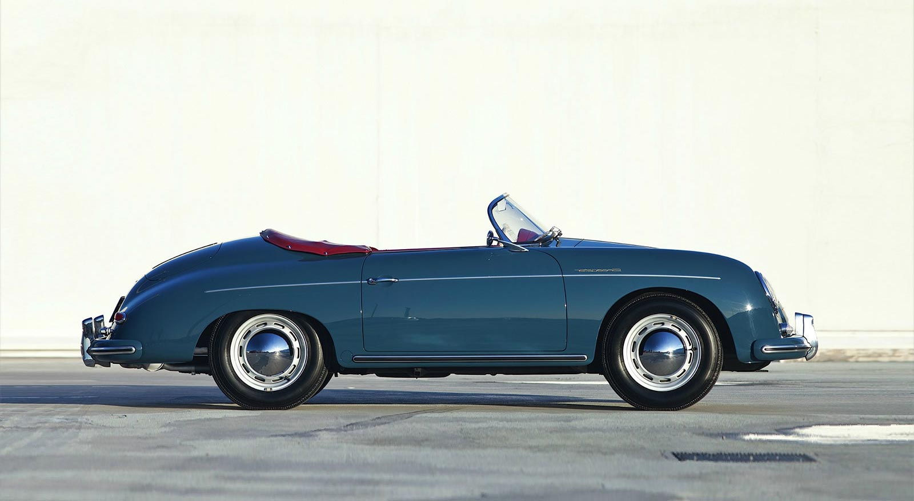

PORSCHEvolution
EvolutionFerdinand Porsche
The history of Porsche goes back to 1875 - the birth year of Ferdinand Porsche. It is he who laid the foundations for a unique company with strong ideals.
1930s
Type 64 Racing Coupé: Built for long-distance ‘Berlin–Rom-Wagen’ endurance competition. Considered the forefathers of all later Porsche sports cars.

1940s
356 Speedster: Porsche's first production automobile started in Gmünd in Austria, where only 49 of these aluminum Porsches were built.

1950s
356 Carrera Cabriolet: Shortly before Porsche celebrated 10th anniversary of 356 model, 356 had developed into one of the world’s most respected sports cars.

1960s
901: Successor of Porsche 356. Between 14 September and 16 November 1964, 82 cars were built. Due to Peugeot was renamed to 911.
1970s
911 Turbo: At the Paris Auto Show Porsche presents the 911 Turbo – the world’s first production sports car with an exhaust turbocharger and pressure regulator.
1980s
911 Carrera Speedster: In 1984 the 911 celebrated its 20th birthday. It had a lower and flatter windscreen and a simpler manual top that folded beneath a fiberglass cover.
1990s
911: It’s got classic lines, albeit updated with plastic bumpers, with modern technology such as 4x4 ABS and electronic heating.
2000s
911: The sixth generation of the 911 series, the new 911 Turbo with 480PS six-speed manual transmission requires 3.9 seconds from 0 to 100 km/h.
2010s
911 Carrera 4S Coupe: The iconic Porsche 911 sports car celebrates its 50th birthday in 2013. Today's 911 still has many stories to tell. Of heroic race victories, iconic design, childhood dreams. And of a timeless idea.
2020s
The 911. Tradition. Future. Since 1963.